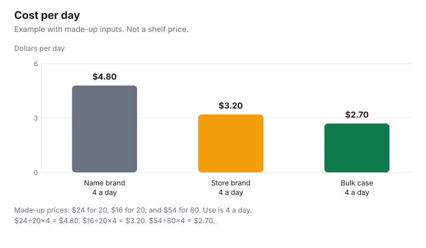

Personal Care · Canada
Incontinence Products in Canada: Cost per Day, Store Brands and the Medical Expense Credit
To compare incontinence products in Canada, work out cost per day: price ÷ count × the number used per day. In a made-up example at four a day, packs came to $4.80, $3.20 and $2.70 a day, and some products can count as medical expenses under the CRA’s RC4065 rules. Continence products are a weekly bill that rarely shows up in a household budget conversation. The useful number is not the package price. It is the price divided by the count, multiplied by how many you use in a day. Tax relief, when a product meets the Canada Revenue Agency’s conditions, comes after that arithmetic. It does not replace it. This page is the cost-per-day method, the store-brand comparison you can do from the package, and the RC4065 wording to confirm before anyone claims a credit. It does not choose a product for a body, and it does not tell you what you can claim.
Key takeaways
- Cost per day is price ÷ count × the number used per day. Change the daily number and the winner can change.
- Example with made-up inputs: four a day turns $24 for 20 into $4.80, $16 for 20 into $3.20, and $54 for 80 into $2.70. Those are not shelf prices.
- The medical-expenses guide records two RC4065 groups: catheter-type products, and diapers or disposable briefs, each tied to incontinence from illness, injury, or affliction. Confirm the current list with the CRA.
- This guide does not name a provincial program. Check your province.
- A larger case is cheaper per day only for units you will use. Generic wipes are not the product the RC4065 lines quoted here describe.
Product types and absorbency
Packages on a Canadian shelf tend to sort into liners or guards, protective underwear, and briefs. The words on the front, light through maximum or overnight, are the maker’s description of that package.
They are not a clinical scale this page can translate into a recommendation. Match a new package to the absorbency words and the count of the product you already use, then run the cost-per-day division. If skin is breaking down, or you are choosing a first product after a diagnosis, ask a pharmacist or a nurse. That conversation is not a coupon.
A drug identification number or a natural product number is a different aisle. An ordinary brief usually will not carry one. If a package does, search the number in the Drug Product Database or the Licensed Natural Health Products Database and read the status before you compare it with a brief that has no number. Do not treat a lower price as evidence that two packages manage the same volume. The count and the absorbency words are the shopping facts. The person who wears the product is the judge of leaks and comfort, not a table on a website.
Cost per day
Write four numbers. Price paid, after any coupon you actually received.
Count in the package, from the label, not from the size of the bag. Number used on a typical day, counted for a week if the day-to-day figure swings. Days you will get from the package, which is count divided by daily use. Cost per day is price divided by that number of days, which is the same as price ÷ count × daily use. Cost for a month is the daily figure times the days in that month. Do not annualise a sample week if the week was a trip or an illness that changed the count.
Example with made-up inputs. Daily use is 4. A name brand is $24 for 20, so a package lasts 5 days and the cost per day is $24 ÷ 5, or $24 ÷ 20 × 4, which is $4.80. A store brand is $16 for 20, which is $3.20 a day. A bulk case is $54 for 80, which lasts 20 days and costs $2.70 a day. Over 365 days at that same rate, the example is $1,752, $1,168, and $985.50. None of those dollars is a shelf price. Put your receipt on the worksheet and throw the example out. If you use 3 a day instead of 4, every row changes: the $24 package lasts 20 ÷ 3 days, and the daily cost is $24 ÷ 20 × 3, which is $3.60. The method is the point. The inputs are yours.
| Row | Price | Count | Days at 4 a day | Cost per day |
|---|---|---|---|---|
| Name brand | $24 | 20 | 5 | $4.80 |
| Store brand | $16 | 20 | 5 | $3.20 |
| Bulk case | $54 | 80 | 20 | $2.70 |
| Your receipt | Count ÷ your daily use | Price ÷ those days |
Store brands and bulk delivery
A store brand wins when its cost per day is lower at the same daily use and the person wearing it is willing to stay with it. It loses when the count is smaller than it looks, when the absorbency words are a step below what you already use and you then use more pieces, or when you buy a case and change products halfway.
Compare the price per piece first, then multiply by the number you really use. Two packages with the same price per piece and different real-world use are not the same daily cost. The Costco personal-care guide is the warehouse version of finishing what you buy. No banner is ranked here.
Delivery changes the trip, not the division. A case on a schedule is useful when the count matches a month you will actually live, and when someone is home to receive it. It is a poor buy when the product is still being adjusted, because a case of the wrong absorbency is a case. Amazon.ca storefronts are an offer type under the disclosure above, not a partner this site claims, and not a reason to skip the division. How a subscribe-and-save discount is calculated, when one is offered, is the subscribe-and-save guide. This page does not restate a discount percent. Divide the price you will be charged, not a crossed-out tag.
CRA eligibility when needed for a condition
The personal-care medical expenses guide records the wording in guide RC4065 for this category. It records two groups.
One is “Catheters, catheter trays, tubing, or other products needed for incontinence caused by illness, injury, or affliction.” The other is “Diapers or disposable briefs for a person who is incontinent because of an illness, injury or affliction.” Read those sentences on the CRA’s own RC4065 page before you rely on them. A companion page on this site is not the statute, and the CRA can revise a guide. This article does not decide whether your receipts qualify.
The same companion guide records folio S1-F1-C1, paragraph 1.87, as limiting “other products” to the same class as diapers, disposable briefs, catheters, catheter trays, and tubing. It records the folio as saying that generic items such as bed clothing, disposable gloves, body ointments, and baby wipes are not medical expenses under that paragraph when they are generic and not designed for use by incontinent persons. Confirm that paragraph on the folio if you are about to claim a wipe or an ointment. Ordinary toiletries do not become eligible because they share a bathroom with a brief. The threshold and which 12-month window you may use are not restated here. They are on the medical expense tax credit guide. Which spouse claims is a separate choice, on the which-spouse guide. Education only. Confirm with the CRA or a tax professional.
| RC4065 line | Condition in that line | What this page will not do |
|---|---|---|
| Catheters, catheter trays, tubing, or other products | Needed for incontinence caused by illness, injury, or affliction | It will not decide that a receipt meets the line |
| Diapers or disposable briefs | For a person who is incontinent because of an illness, injury or affliction | It will not add wipes, gloves, or ordinary toiletries to the line |
Caregiver tips
Keep the receipt that shows the date, the amount paid, and a description of the product, and note who the product was for. A card slip that says “pharmacy” or “online order” is a payment record, not a description of briefs or catheters.
If you are claiming, the condition in the RC4065 sentence is part of what you are asking the CRA to accept. This guide does not cite a form that replaces your notice of assessment. Store the case where it stays dry, and count what is left before the next order so you are not buying a second case out of worry.
Caregivers also get stuck buying the product the household used to need. Re-run the daily count when mobility, illness, or the care plan changes. A bulk case purchased for four a day is the wrong denominator at two a day, and it is the wrong product if a clinician has changed the type. Ask the pharmacist when skin is sore. Do not stretch a brief to save a dollar if that causes leaks you then manage with laundry and extra product. The cost-per-day figure is there so the household can see the bill. It is not a reason to under-buy.

Sources
- Saving Optimizer, personal-care medical expenses guide, which records guide RC4065 wording as of 29 Sep 2026: catheters, catheter trays, tubing, or other products needed for incontinence caused by illness, injury, or affliction; and diapers or disposable briefs for a person who is incontinent because of an illness, injury or affliction. Confirm on the CRA RC4065 page.
- The same guide records folio S1-F1-C1, paragraph 1.87, on the class of “other products” and on generic items such as bed clothing, disposable gloves, body ointments, and baby wipes. Confirm the folio before you claim.
- Canada Revenue Agency, lines 33099 and 33199, and guide RC4065: use the CRA pages for the current list, the threshold, and the window. This article does not restate a threshold percent.
- No provincial program was cited on 29 Sep 2026. Check your province.
- The daily costs in the table and the chart are an example with made-up inputs, not prices read from a retailer.
Frequently asked questions
How can I lower the cost of incontinence products?
Divide the price by the count in the package, then multiply by the number you use in a day, and compare that cost per day rather than the size of the package. Only units you will actually use belong in the division. A store brand or a larger case can win that figure, and it can lose it. This is a shopping method, not medical advice about which product to use.
Are store brands OK?
This page does not say a store brand performs like a name brand, because no clinical comparison is cited here. Compare the count, the absorbency words printed on the package, and the price per day at the number you use. If a package prints a DIN or an NPN, look that number up before you treat the products as the same kind of item. Fit and skin are a conversation with a pharmacist or a nurse, not a price ranking.
Can I claim incontinence products on my taxes?
The personal-care medical expenses guide records guide RC4065 as listing catheters, catheter trays, tubing, or other products needed for incontinence caused by illness, injury, or affliction, and diapers or disposable briefs for a person who is incontinent because of an illness, injury or affliction. Confirm those lines on the CRA’s RC4065 page before you claim. The credit’s threshold and the 12-month window are on the medical expense guide. This is education, not a ruling on your receipt.
Are there provincial programs that help?
Check your province. This guide does not cite a provincial program name, an income test, or a dollar amount for incontinence supplies. A program that exists in one province is not a national rule. Start with your provincial health ministry or the program your clinician already named, and keep the federal credit question on the CRA page.
Is buying in bulk worth it?
Only when you will use the units. In the example with made-up inputs, a case of 80 at $54 used four a day is $2.70 a day, against $4.80 for a made-up name brand of 20 at $24. If you will not finish the case, divide by the units you will use, not by the count on the label. A delivery schedule does not fix a case that no longer matches the product you need.
Researched and drafted with AI assistance and fact-checked against official Canadian sources. How we create content.
Disclosure: Incontinence products sold through Amazon.ca storefronts are an offer type. Saving Optimizer may earn a commission if a partner link is added later. No partnership is claimed with Amazon or any product brand. A storefront does not change the cost-per-day division, and it does not decide a tax credit. Education only. This is not medical advice and not tax advice.